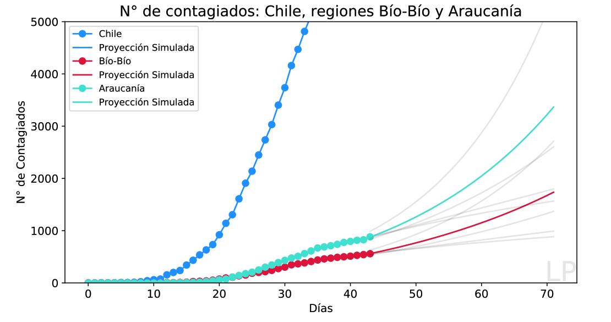
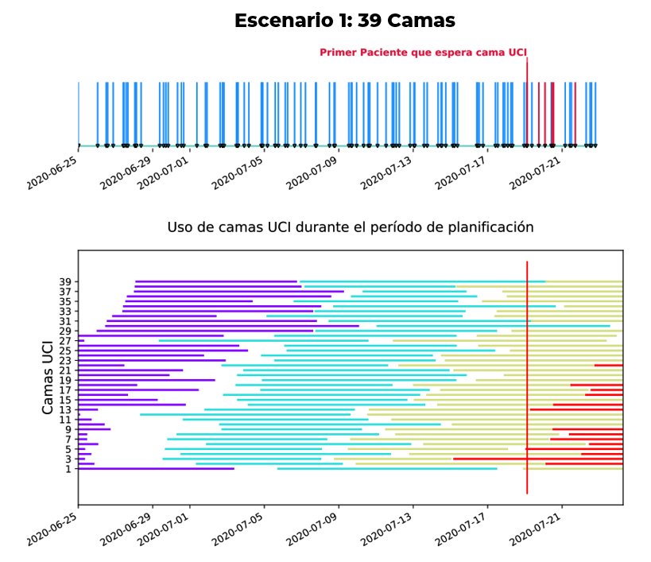

Herramienta de proyección del uso de camas de la Unidad de Cuidados Intensivos (UCI)
Proyecto desarrollado en conjunto con el Hospital Guillermo Grant Benavente (HGGB)
La disponibilidad de unidades críticas en un hospital puede llegar a colapsar cuando se enfrentan situaciones de aumento repentino de los requerimientos en un corto intervalo de tiempo tal como ocurre durante una pandemia. El crecimiento de los casos por coronavirus (COVID-19) y en consecuencia, el aumento del número de pacientes que requieren de cuidado intensivo, produce un estrés en la toma de decisiones que obliga a evaluar de antemano distintos escenarios para los recursos disponibles. Conocer anticipadamente el número de pacientes que requerirían de cuidado intensivo permitiría tomar las medidas apropiadas para aumentar, de acuerdo a la disponibilidad tecnológica, el número de de tales unidades si esto fuese requerido.
Con el fin de evaluar las necesidades futuras de una Unidad de Cuidados Intensivos, nosotros recurrimos a un modelo de simulación por eventos discretos que permite identificar anticipadamente el momento en el cual se podría saturar la capacidad. A partir de este modelo se construye una herramienta computacional que genera distintos escenarios posibles. Como los datos a nivel nacional se actualizan diariamente, cada día se ejecuta el modelo y se prepara un informe para el Hospital con el fin apoyar la toma de decisiones. Con esa información, la dirección del hospital toma sus decisiones de programación semanal de actividades. A continuación se presenta una figura que contiene las distintas proyecciones posibles para simular distintos escenarios.
Como datos de entrada se considera: un período de simulación, el número de casos identificados desde el inicio de la enfermedad, el porcentaje
de casos que requieren hospitalización, el porcentaje de pacientes hospitalizados que requieren de cuidado intensivo y el número camas-UCI disponibles. Para proyectar en el corto plazo el número
de nuevos casos, se utilizan diversas funciones matemáticas y para estimar el número de días-cama requeridos por cada paciente, se usa una variable aleatoria distribuida según una distribución
normal. La herramienta computacional produce un reporte que ilustra de manera gráfica el uso que tendría la UCI durante el período de simulación.
A continuación se presenta un ejemplo de parte del informe diario entregado por la herramienta.

Pueden encontrar más detalles sobre el sistema computacional aqui.
Autores: M. Werner (Hospital HGGB & UdeC); L. Parada (UdeC); L. Pradenas (UdeC), V. Parada (USACH, ISCI).